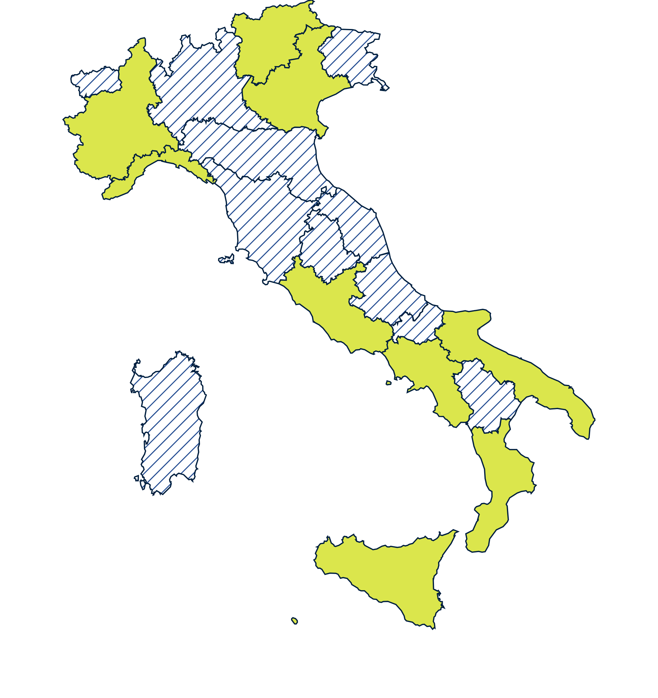

Agenzia per il Monitoraggio Atmosferico
Agenzia per il Monitoraggio Atmosfericoe la Modifica Meteorologica Ambientale
Delibera n. 27/2036 · Mappa delle zone
mamma.gov.it
mamma.gov.it
Agenzia per il Monitoraggio AtmosfericoDelibera del Consiglio di amministrazione n. 27/2036 · 30 giugno 2036
Il Consiglio di amministrazione di MAMMA, visto l'articolo 4 della legge 18 dicembre 2033, n. 214, e la Metodologia dell'Indice di valore agroalimentare (IVA) nella versione 3.1, delibera l'assegnazione delle zone per il periodo dal 1° luglio 2036 al 30 giugno 2038.
Sono zone protette le regioni con IVA pari o superiore a 0,60. Sono zone di compensazione le altre. Rispetto al biennio precedente cambiano ruolo tre regioni. La Calabria diventa zona protetta, la Toscana e l'Emilia-Romagna diventano zone di compensazione.

Zona protetta, 9 regioni
Zona di compensazione, 11 regioni
| Regione | IVA 2036 | Ruolo |
|---|---|---|
| Sicilia | 0,81 | Zona protetta |
| Campania | 0,79 | Zona protetta |
| Liguria | 0,77 | Zona protetta |
| Puglia | 0,74 | Zona protetta |
| Veneto | 0,73 | Zona protetta |
| Lazio | 0,71 | Zona protetta |
| Piemonte | 0,70 | Zona protetta |
| Trentino-Alto Adige | 0,68 | Zona protetta |
| Calabria | 0,63 | Zona protetta |
| Toscana | 0,58 | Zona di compensazione |
| Emilia-Romagna | 0,57 | Zona di compensazione |
| Lombardia | 0,55 | Zona di compensazione |
| Marche | 0,49 | Zona di compensazione |
| Umbria | 0,46 | Zona di compensazione |
| Abruzzo | 0,44 | Zona di compensazione |
| Friuli-Venezia Giulia | 0,43 | Zona di compensazione |
| Sardegna | 0,41 | Zona di compensazione |
| Basilicata | 0,38 | Zona di compensazione |
| Molise | 0,35 | Zona di compensazione |
| Valle d'Aosta | 0,31 | Zona di compensazione |
Ogni zona protetta è collegata a una o più zone di compensazione verso cui MAMMA può spostare le perturbazioni. La percentuale indica la quota massima di perturbazione che può essere spostata in un singolo intervento.
| Zona protetta | Zona di compensazione | Quota massima |
|---|---|---|
| Sicilia | Sardegna | 80% |
| Liguria | Lombardia | 70% |
| Lazio | Abruzzo | 75% |
| Campania | Basilicata | 65% |
| Puglia | Molise | 60% |
| Veneto | Friuli-Venezia Giulia | 55% |
| Piemonte | Valle d'Aosta | 50% |
| Calabria | Basilicata | 45% |
| Trentino-Alto Adige | Lombardia | 40% |
La presente delibera è pubblicata nella sezione Trasparenza del sito istituzionale. I comuni delle zone di compensazione ricevono i preavvisi di ogni intervento con almeno 72 ore di anticipo. Il contributo di compensazione è riconosciuto alle aziende agricole delle zone di compensazione secondo il Regolamento n. 2/2035.
Roma, 30 giugno 2036 · Il Presidente del Consiglio di amministrazione